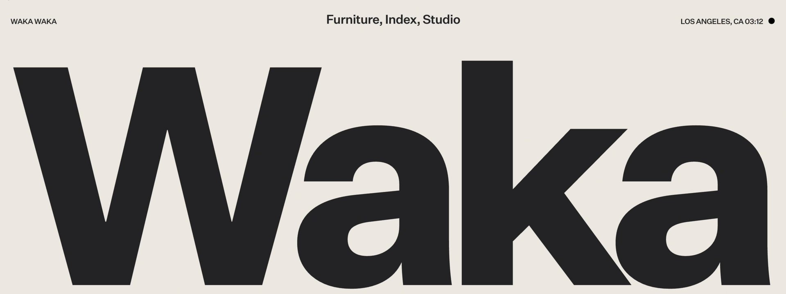
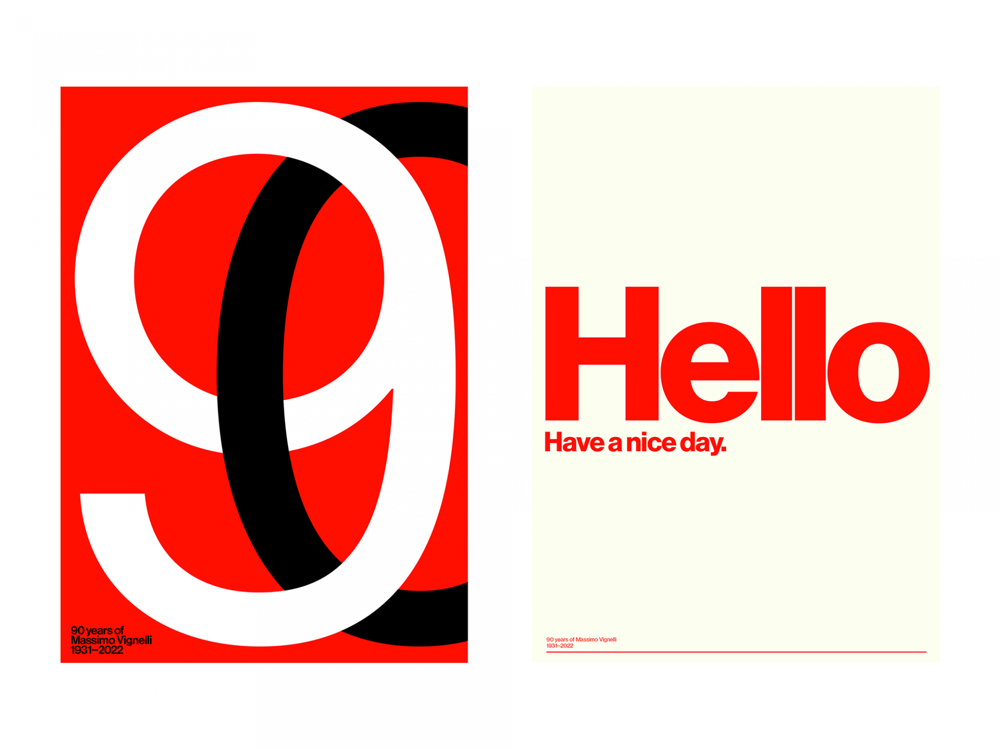
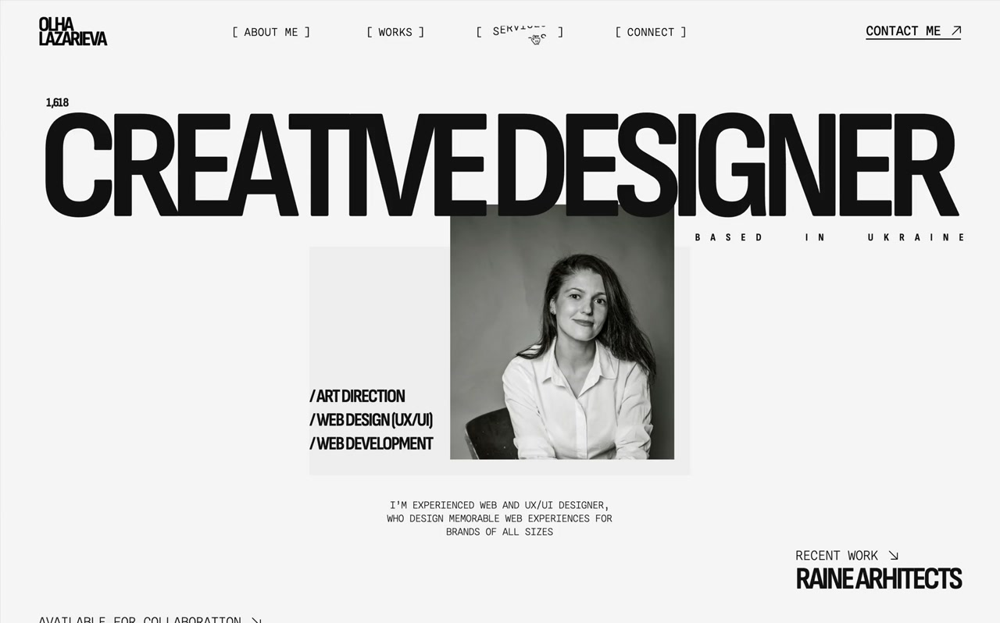
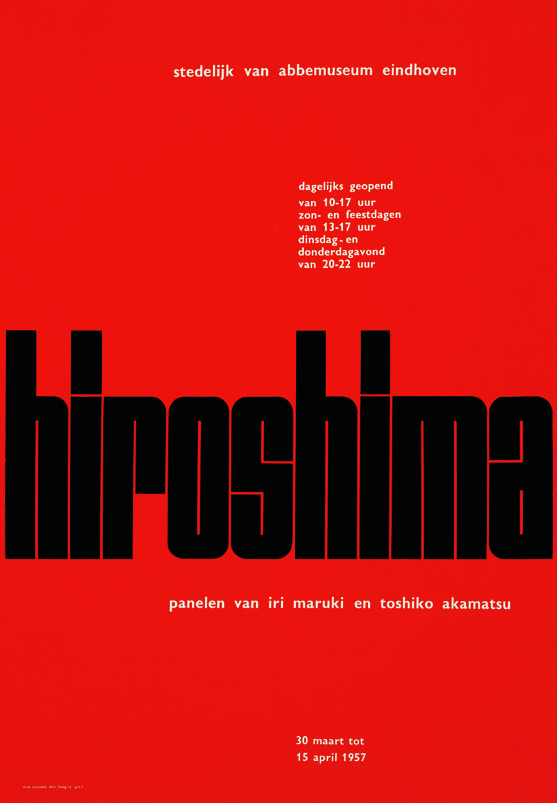
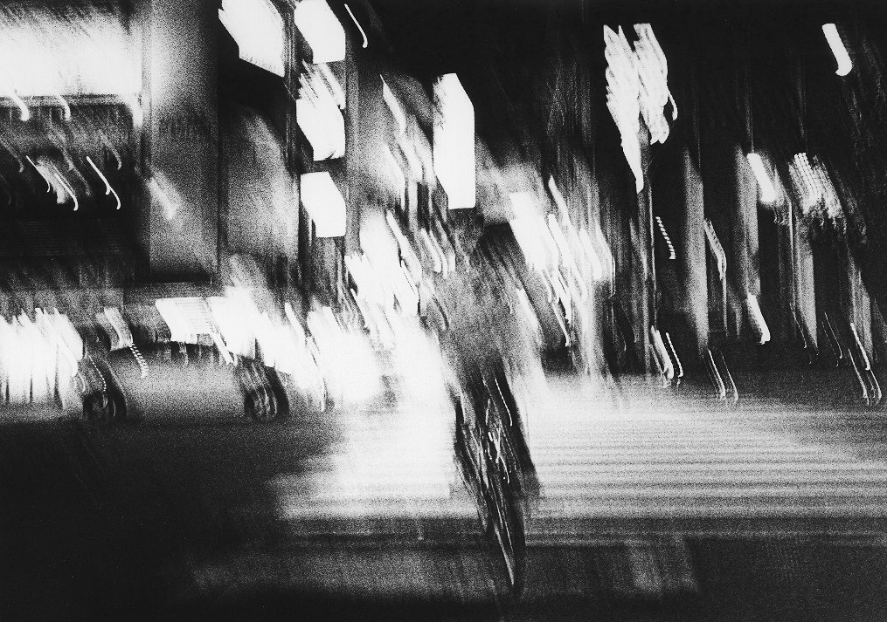
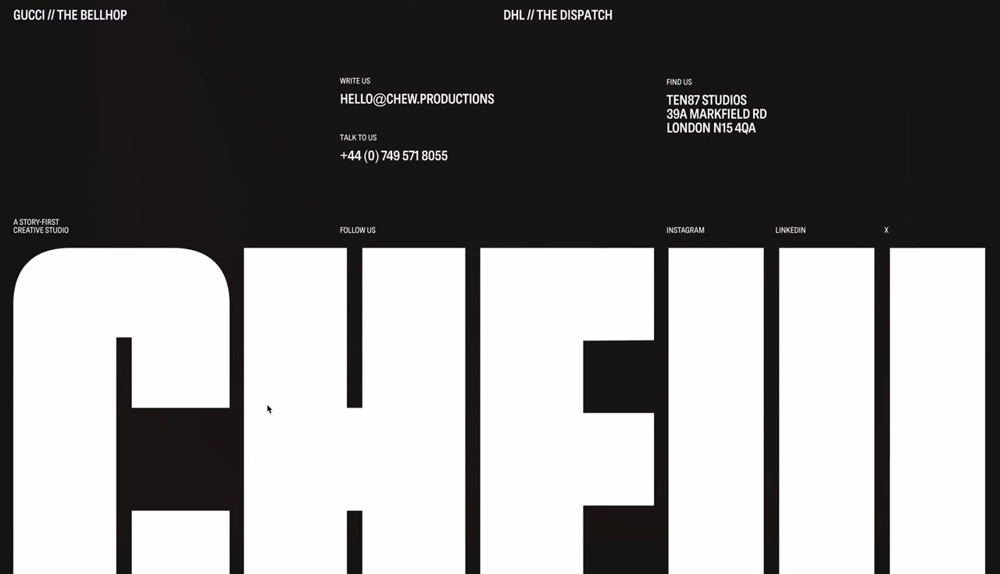

I want this to emulate the look and feel for the new typemachine website. Claude adds: the pins share one move, a single word set so large in a heavy grotesk that it runs edge to edge and becomes the layout, with small, plain text placed around it on a strict grid. The palette is black and warm off-white, with one flat signal red. Nothing is decorative: no shadows, gradients or rounding, and the one photograph is grainy black and white.






#232326#EBE7E0#F01A0A#FBFBF2